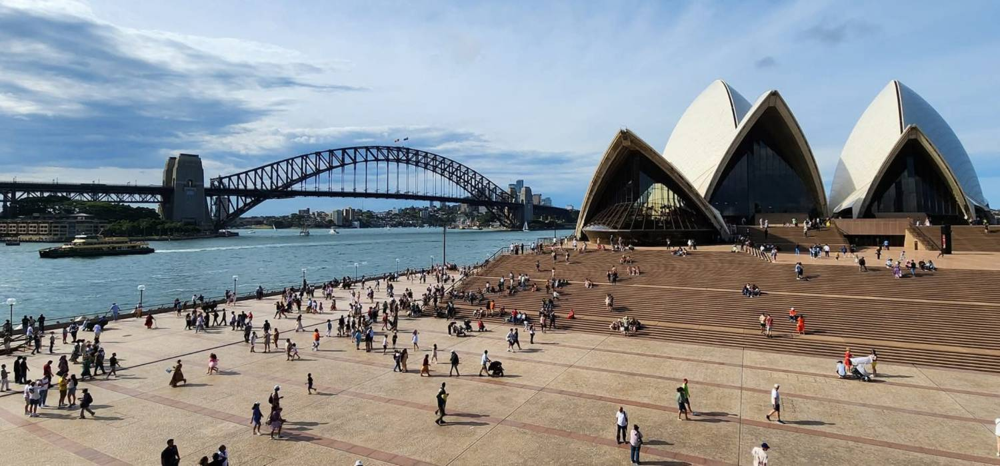
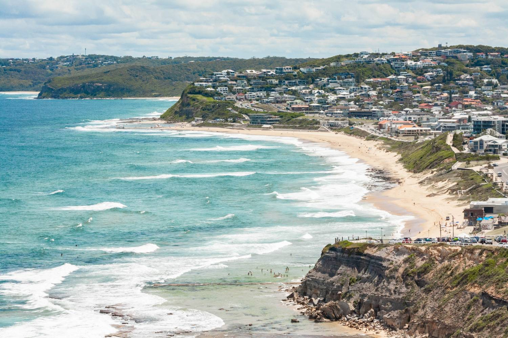
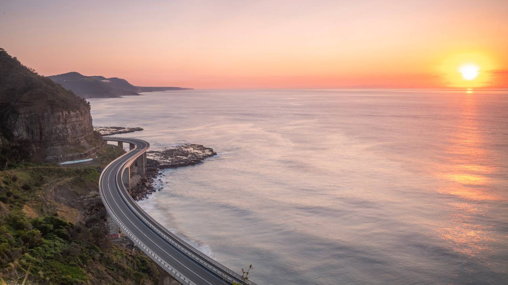

New South Wales
The biggest choice in Australia — and the sharpest arithmetic
A guide to living, working and settling in Australia’s largest state — written for healthcare professionals, by the team who help them move.
The default answer, examined properly.
One Australian in three lives in New South Wales. Sydney is the country’s biggest city, its main gateway and its deepest healthcare job market — and behind it sits a state of surf coasts, wine valleys, world-heritage mountains and genuine outback.
The public system here is the largest in Australia: fifteen local health districts running more than two hundred and twenty hospitals, with the deepest tertiary concentration in the southern hemisphere in Sydney and busy referral centres across the regions. Registration is national; hiring is local. Which district you choose decides your daily life.
The honest cost is Sydney’s housing — the most expensive in the country, concentrated exactly where most people first want to live. This guide treats that plainly, and gives the Hunter, the Illawarra and the regional cities the attention the arithmetic says they deserve.
Welcome to the harbour state.
Warm regards — the Ethicare team

New South Wales, in short
The five-second versionWhat’s inside
Fifteen chapters in five parts. Nine are written for New South Wales; the rest are national and live once in Moving to Australia, so you only read them once.


Ready to explore opportunities?
No pressure and no pipeline. Read the guide, sit with it, and talk to us whenever it’s useful — even if that’s a year from now.